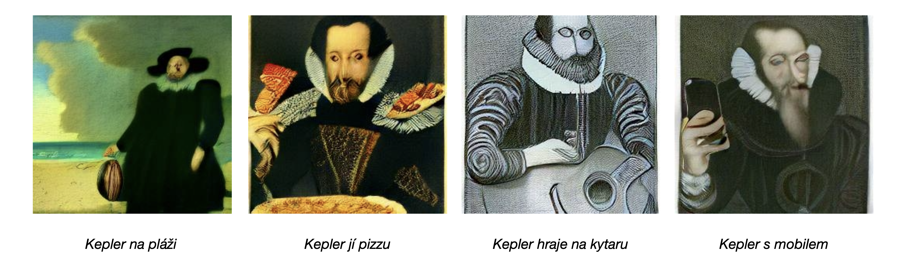

WORKSHOP NA GENERATIVNÍ MODELY
Když umělá inteligence píše a kreslí
Jazyk, mluvené a psané slovo. Ve své nejniternější podstatě se tento komunikační prostředek drží přísného řádu a oficiálních pravidel. Kdykoliv jej však používáme a skloňujeme k interakci se svým okolím, nabíráme pocitu, jako by se všechen řád náhle vytratil. Z úst či pera se nám pak sunou chaotické sledy slov, u nichž doufáme, že třetí straně kloudně předají kýženou informaci.
Při studiu jazyka pomocí umělé inteligence (nebo přesněji jazykových modelů na bázi strojového učení) se však ukázalo, že jen příkladové texty z internetu a několik chytře využitých konceptů statistiky nás může dostat v generaci nových textů počítačem překvapivě daleko. Ukazuje se tak, že pod rouškou neřádu přeci jen leží řád.
Na těchto základech dále staví nejnovější generativní modely, které byly v dovedeny do stavu, ve kterém jsou schopny psát lidsky vypadající texty na arbitrární zadané téma. Tyto modely již dnes dokonce skrytě fungují na místech, kde si toho mnohdy nevšimneme – píší zpravodajské titulky, shrnují dokumenty a napsaly dokonce i divadelní hru. Oblast generace umělou inteligencí se nesmírně posunula i v práci s obrázky, kde již nejnovější modely svedou “kreslit” v podstatě na libovolný zadaný popisek.
V rámci workshopu si tedy přiblížíme, na jakých matematických principech tyto modely fungují, kde se s nimi již můžete setkat, jaká jsou rizika, výhody a vyhlídky do budoucna. Hlavně si je ale všichni budete moci vyzkoušet přímo v praxi.

Jazykové modely
Jazykové modely v nejprostší podstatě staví na tom, že mohou na základě kontextu (třeba začátku věty) pravděpodobnostně odvodit další slova. Tak aby fungovaly skutečně robustně na široké paletě textů tuto myšlenku dále rozvíjejí (např. využívají slovních vektorových reprezentací) a zároveň rozšiřují škálu trénovacích dat. Třeba GPT-3 při svém trénování vidělo snímek skoro celého dostupného internetu. V každém případě jazykové modely staví na jasném řádu jazyka, který se nám může zdát skrytý.
Níže naleznete demo modelu GPT-2. Pokud si chcete vyzkoušet ještě schopnější GPT-3, můžete se zdarma zaregistrovat zde a využít základní demo od OpenAI.
[ 1 ] Citace TBD
[ 2 ] Citace TBD
Generativní modely
Generativní obrazové modely jdou o krok dále. Za pomoci praktik obejevených při vývoji výše popsaných jazkových modelů vyvinulo OpenAI model, který se učí převádět textové popisky do obrázků (kreseb i fotek).
[ 1 ] Citace TBD
[ 2 ] Citace TBD
Matyáš Boháček 2022. Podněty a dotazy směřujte prosím sem :)